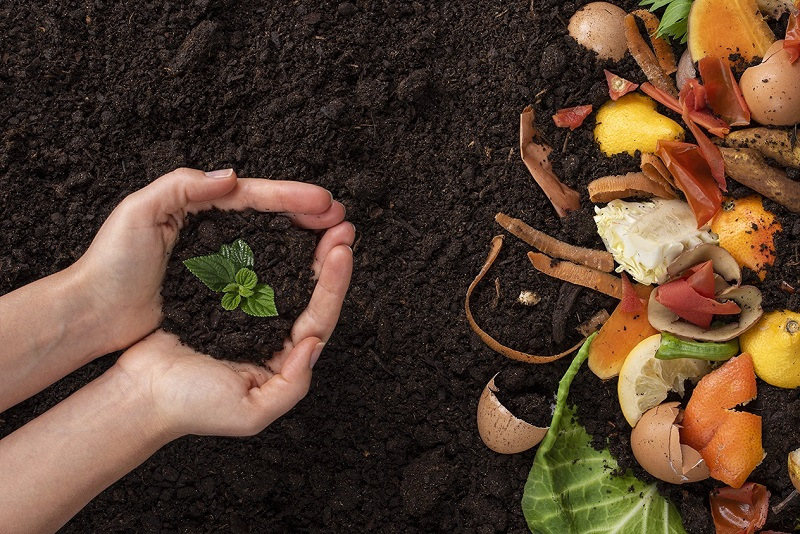
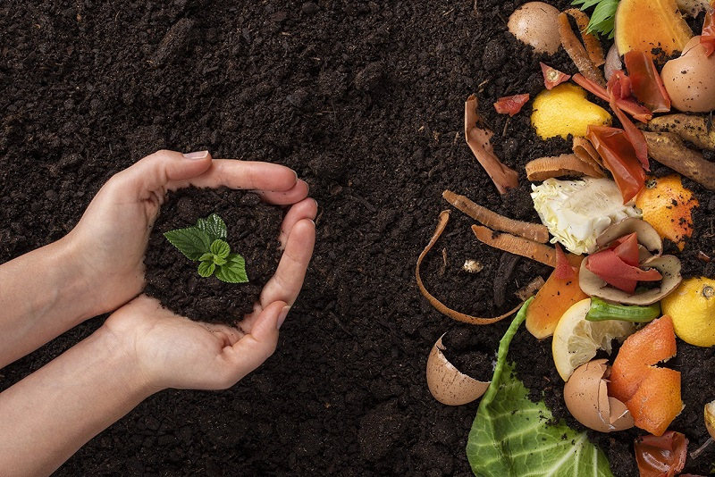

Bem-vindo ao site de informações sobre Resíduos para horta comunitária!
Este site tem como objetivo informar sobre os benefícios dos lixos orgânicos para horta comunitária .
Este site tem como objetivo informar sobre os benefícios dos lixos orgânicos para horta comunitária .
